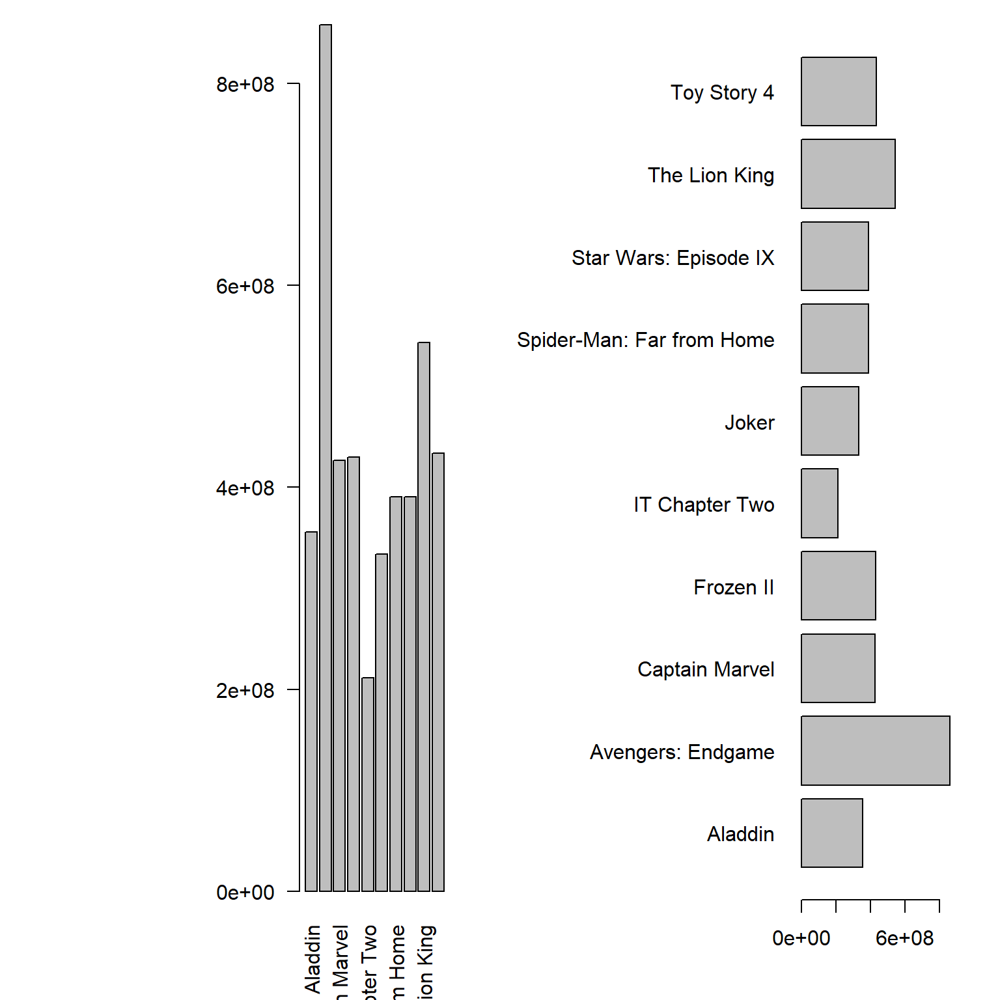
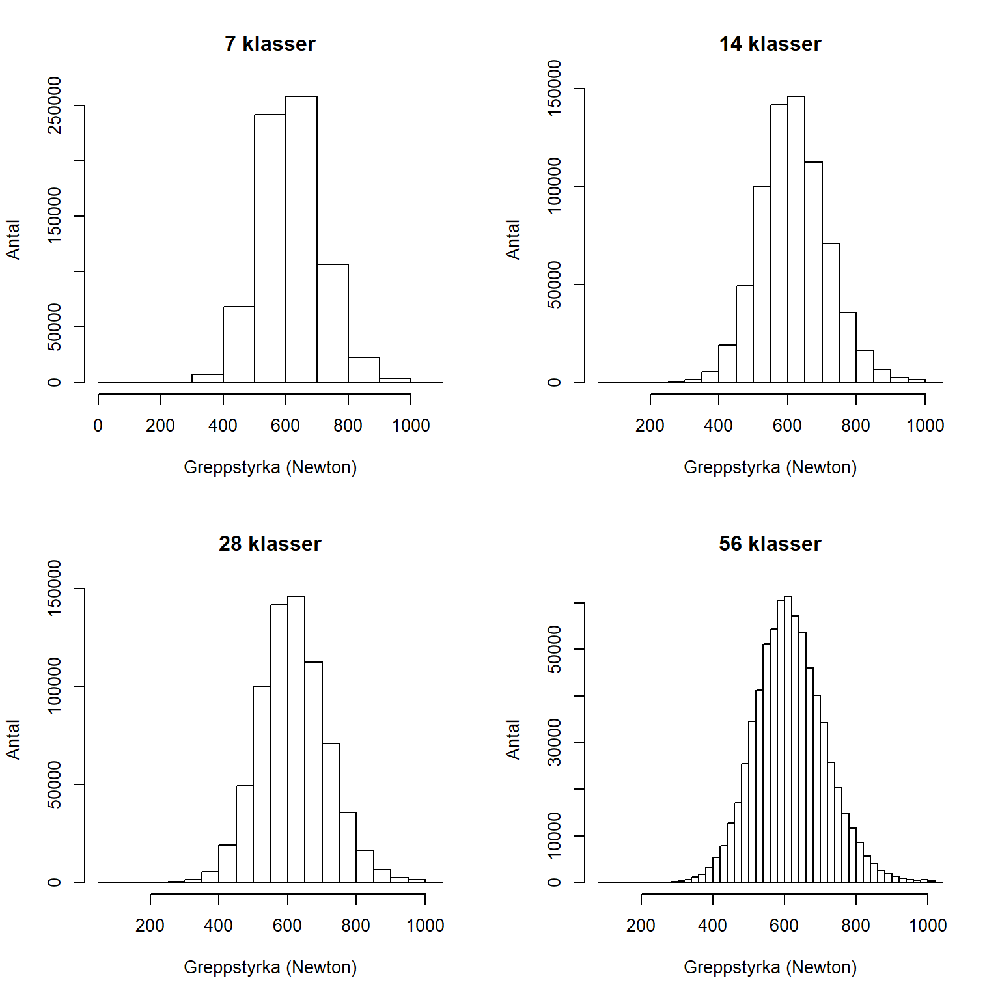
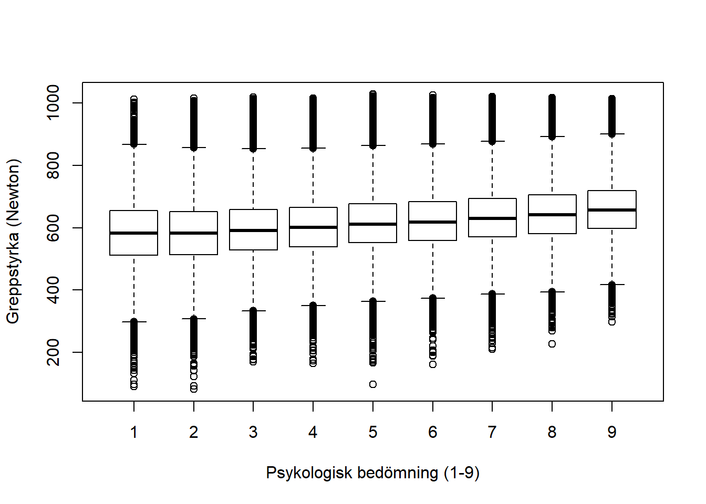
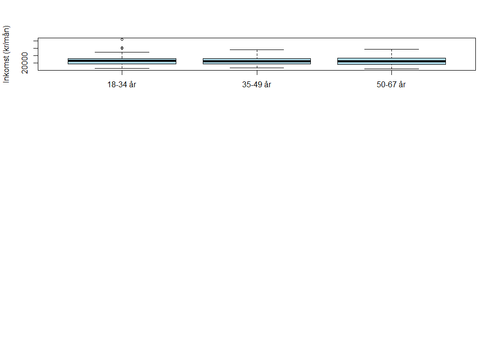
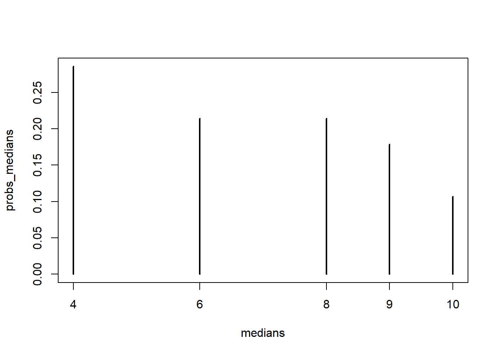

Kapitel 6 Figurer
R ger tillgång till omfattande möjligheter gällande datavisualisering och faktum är att R delvis skapades utifrån behovet av ett verktyg för avancerad visualisering. Dels ger basutbudet i R stora möjligheter, dels finns det paket (exempelvis ggplot2 och lattice) som ger ytterligare möjligheter. ## Om figurer i R
Det finns i R ett par grundläggande saker som man som användare måste känna till när man konstruerar figurer. Vi kommer att presentera ett par sådana funktioner utan att gå på djupet, utan avsikten är att täcka de vanligaste situationerna.
För det första bygger R på att man med hjälp av en figur-funktion, t ex plot(), skapar en canvas/målarduk. Det går att med olika argument i flera steg måla på denna. Vi illusterar detta arbetssätt genom att med plot() först skapa en figur och sedan med lines fylla på en regressionslinje.
# Dataset 1
x1 <- c(10, 8, 13, 9, 11, 14, 6, 4, 12, 7, 5)
y1 <- c(8.04, 6.95, 7.58, 8.81, 8.33, 9.96, 7.24, 4.26, 10.84, 4.82, 5.68)
# Regressionlinje för datasetet
x <- 4:14
Ey <- 3.00 + 0.500*x
# Skapa en figur. Fyller på med en linje med lines()
plot(x1, y1)
lines(x, Ey)
För det andra omges målarduken av en ram (marginaler). Genom att använda funktionen par(mar = c(mar = c(5.1, 4.1, 4.1, 2.1)), där värdena är defuault-inställningen, kan vi ändra marginalernas bredd. Figur nedan illusterar marginalerna och ordningen på värden korresponderar till position och vi har en nedre marginal (1), en vänstermarginal (2), en övre marginal (3) och en högermarginal (4).

Figure 6.1: Marginaler i figurer
Vi ändrar nu värdena och ser att marginalerna ändras. Denna funktionalitet används relativt ofta eftersom man inte vill ha onödiga vita ytor i sin figur.
# Skapa en figur. Fyller på med lines
par(mar = c(2, 2, 2, 2)) # All marginaler är 2
plot(x1, y1)
lines(x, Ey)
# Skapa en figur. Fyller på med lines
par(mar = c(7, 3, 3, 3)) # Nedre marginalen är 7, övriga 3
plot(x1, y1)
lines(x, Ey)
För det tredje är det vanligt att inkludera flera diagram i en större figur. Vi använder återigen par() funktionen, nu med argumentet mfrow = c(antalrader, antalkolumner) som innehåller två värden, en som anger antalet rader och anger antalet kolumner.
# 3 data data utöver det första
x2 <- c(10, 8, 13, 9, 11, 14, 6, 4, 12, 7, 5)
x3 <- c(10, 8, 13, 9, 11, 14, 6, 4, 12, 7, 5)
x4 <- c(8, 8, 13, 8, 8, 8, 8, 8, 8, 8, 8)
y2 <- c(9.14, 8.14, 8.74, 8.77, 9.26, 8.10, 6.13, 3.10, 9.13, 7.26, 4.74)
y3 <- c(7.46, 6.77, 12.74, 7.11, 7.81, 8.84, 6.08, 5.39, 8.15, 6.42, 5.73)
y4 <- c(6.58, 5.76, 7.71, 8.84, 8.47, 7.04, 5.25, 12.50, 5.56, 7.91, 6.89)
# Skapa fyra diagram i en figur, 2 rader och 2 kolumner. Fyller på med lines i varje diagram.
par(mfrow = c(2, 2))
plot(x1, y1, xlim = c(4,15), ylim = c(4,13))
lines(x, Ey, col = "red")
plot(x2, y2, xlim = c(4,15), ylim = c(4,13))
lines(x, Ey, col = "red")
plot(x3, y3, xlim = c(4,15), ylim = c(4,13))
lines(x, Ey, col = "red")
plot(x4, y4, xlim = c(4,15), ylim = c(4,13))
lines(x, Ey, col = "red")
Nu kan vi avslutningsvis kombinera de bägge argumenten i par() med målet att ha fyra diagram i en figur, men med mindre marginaler än ovan.
# Skapa fyra diagram i en figur. Fyller på med en linje med lines()
par(mfrow = c(2, 2), mar = c(4, 4, 1, 1))
plot(x1, y1, xlim = c(4,15), ylim = c(4,13))
lines(x, Ey, col = "red")
plot(x2, y2, xlim = c(4,15), ylim = c(4,13))
lines(x, Ey, col = "red")
plot(x3, y3, xlim = c(4,15), ylim = c(4,13))
lines(x, Ey, col = "red")
plot(x4, y4, xlim = c(4,15), ylim = c(4,13))
lines(x, Ey, col = "red")
För att stänga ner en figur och därmed nollställa parametern skriver vi dev.off(). Vi ska senare återkomma till hur vi exportera figuren.
Det är värt att notera att man ofta får prova sig fram när man skapar figurer i R.
6.1 Syftet med figurer
En figur kan vara ett diagram, ett foto, en skiss. När tabeller ger detaljer, så är syftet med figurer att förmedla en övergripande uppfattning om det vi studerar. Man måste alltid ställa sig frågan om en figur är nödvändig eller om den enbart kopierar information som finns i en tabell. En bra figur kan leda till en lång diskussion förkortas. Dessutom, eftersom figurerna ofta är det som läsaren av en vetenskaplig artikel eller en rapport först ser är det viktigt att figurerna är välgjorda.
När vi ska skapa en figur är det viktigt att veta det primära syftet med figuren utifrån två alternativ:
- Figurer primärt avsedda för en intern analys, dvs för dataanalytikern och andra involverade i analysen. Syften kan till exempel vara att studera data explorativt vid tvätt av data, kontrollera att förutsättningar är uppfyllda vid analyser eller förmedla preliminära resultat. Estetiska och pedagogiska aspekter hos sådana figurer är inte av någon större vikt. Däremot måste naturligtvis figurerna på ett korrekt sätt representera data.
- Figurer avsedda att presenteras ëxternt, dvs figurer som presenteras i en rapport, vetenskaplig artikel eller ett bildspel. En sådan figur ska på ett tydligt och korrekt redovisa det väsentliga i en analys. Den ska även vara estetiskt fullgod. Dessutom måste figuren vara sparad i ett format som fungerar för det medium det ska publiceras i.
Beroende på syfte tar det olika lång tid att skapa figurer. Det kan vara bra att veta att även figurer avsedda för enbart internt bruk kan, om de är komplicerade, ta flera timmar att skapa. Dessutom kan det ta ännu fler timmar för att få data i ordning för att skapa figuren.
Vi kan klassificera figurer enligt fyra kategorier:
- Ok.
- Oestetisk, men korrekt.
- Dålig, innebär att figuren är svårtolkad men principellt korrekt.
- Felaktig.
Vi illustrerar dessa kategorier genom att skapa fyra diagram. Läs in data conscriptiondata1000.csv som är ett OSU på 1000 observationer från INSARK. Vi vill redovisa antalet som har visst antal poäng på Test A vid mönstringen.

Den första figuren är OK eftersom den redovisar stapeldiagramen utan felaktigheter. Den andra figuren är oestetisk beträffande färgval och har hjälplinjer som löper över staplarna istället för bakom. Figuren som klassas som dålig är korrekt, men det är svårt att urskilja detaljer i den. Dessutom är namnen på kategorierna otydliga och kan förväxlas med poäng. Den felaktiga figuren visar staplarna, men det finns ingen information som gör figuren möjlig att tolka.
Notera att distinktionen oestetisk-dålig-felaktig är flytande. Att ha olika färger på staplar innebär att tolkningen av innebär att läsaren kan föranledas att tro att det ytterligare information som inte finns. En korrekt figur som är dålig, kanske är så dålig att den kan misstolkas vilket innebär att den egentligen är felaktig.
Min erfarenhet är att forskare och andra som regelbundet arbetar med vetenskapliga rapporter ofta en ganska bra uppfattning om vad som är en korrekt figur. Däremot saknas en känsla för estetiken i en figur. Å andra sidan är det inte ovanligt att se grafiker som skapar vackra figurer, men som inte tillfredställande redovisar data.
6.2 Typer av figurer
Det finns ofta en uppsättning figurer som ofta används.
6.2.1 Presentation av aggregerade data
Aggregerade data (summor, antal, medelvärden, andelar) presenteras ofta i
- stapeldiagram, där R använder funktionen barplot().
- punktdiagram, där R använder funktionen dotchart().
I princip redovisas grafiskt värden presenteras i en tabell, men en grafisk presentation blir enklare att avläsa. På grund av relationen mellan stapeldiagram och tabeller används i R ofta skapat tabellobjekt i stapeldiagramsfunktionen barplot för att skapa stapeldiagram. Men det går också att använda enskilda variabler från en data frame.
Genom att använda funktionen aggregate() kan vi kompakt skapa en tabell Anta att vi vill för varje nivå av psykologisk bedömning vill beskriva medelvärdet för Test A.
# Skapa en variabel med kategorier fär år
df_testa_psych <- aggregate( df$testa ~ df$psych, df, FUN = mean)
barplot(df_testa_psych[,1],
names.arg = c("Kat 1", "Kat 2", "Kat 3", "Kat 4", "Kat 5", "Kat 6", "Kat 7", "Kat 8", "Kat 9"))
barplot(df_testa_psych[,1],
names.arg = c("Kat 1", "Kat 2", "Kat 3", "Kat 4", "Kat 5", "Kat 6", "Kat 7", "Kat 8", "Kat 9"),
las = 2)
boxoffice2019 <- data.frame(rank = 1:10,
title = c("The Lion King", "Avengers: Endgame", "Toy Story 4", "Frozen II", "Captain Marvel", "Star Wars: Episode IX", "Spider-Man: Far from Home", "Aladdin", "Joker", "IT Chapter Two"),
amount = c(543638043, 858373000, 434038008, 430144682, 426829839,390706234,390532085, 355772511,333772511,211593228))
barplot(boxoffice2019$amount,
names.arg=boxoffice2019$title)


op <- par(mar = c(4, 12, 4, 2))
barplot(boxoffice2019$amount,
names.arg=boxoffice2019$title,
horiz = TRUE,
las=1)par(op)
op <- par(mar = c(4, 12, 4, 2))
barplot(boxoffice2019$amount/1000000,
names.arg=boxoffice2019$title,
horiz = TRUE,
las=1,
xlab = "Miljoner USD")par(op)
boxoffice2019_decreasing <- boxoffice2019[order(boxoffice2019[,1], decreasing=TRUE), ]
op <- par(mar = c(4, 12, 4, 2))
barplot(boxoffice2019_decreasing$amount/1000000,
names.arg=boxoffice2019_decreasing$title,
horiz = TRUE,
las=1,
xlab = "Miljoner USD",
col = "lightblue",
border ="white")Det finns lite riktlinjer
library("dslabs")
data(gapminder)
gapminderEurope2015 <- gapminder[(gapminder$continent == "Europe" & gapminder$year == 2015), ]
barplot(gapminderEurope2015$life_expectancy)



gapminderEurope2015decreasing <- gapminderEurope2015[order(gapminderEurope2015$life_expectancy),]
barplot(gapminderEurope2015decreasing$life_expectancy,
names.arg = gapminderEurope2015decreasing$country,
horiz = TRUE,
las = 2)
dotchart(gapminderEurope2015$life_expectancy,
labels= gapminderEurope2015$country,
horiz = TRUE,
las = 2,
cex = 0.8)> Warning in mtext(labs, side = 2, line = loffset, at = y, adj = 0, col = color, :
> "horiz" is not a graphical parameter> Warning in title(main = main, xlab = xlab, ylab = ylab, ...): "horiz" is not a
> graphical parameter
dotchart(gapminderEurope2015decreasing$life_expectancy,
labels= gapminderEurope2015decreasing$country,
horiz = TRUE,
las = 2,
cex = 0.8,
xlim = c(0,90))> Warning in mtext(labs, side = 2, line = loffset, at = y, adj = 0, col = color, :
> "horiz" is not a graphical parameter
> Warning in mtext(labs, side = 2, line = loffset, at = y, adj = 0, col = color, :
> "horiz" is not a graphical parameterdotchart(gapminderEurope2015decreasing$life_expectancy,
labels= gapminderEurope2015decreasing$country,
horiz = TRUE,
las = 2,
cex = 0.8)> Warning in mtext(labs, side = 2, line = loffset, at = y, adj = 0, col = color, :
> "horiz" is not a graphical parameter
> Warning in mtext(labs, side = 2, line = loffset, at = y, adj = 0, col = color, :
> "horiz" is not a graphical parameter

Hantering av data är av lättförklarliga skäl väldigt viktigt i R. Det tar inledningsvis tid att lära, men är samtidigt något som varje användare måste vara trygg med. Värt att nämna är att nästan alltid finns alternativa sätt arbeta med data i R och vad som presentas här är är endast ett alternativ. På denna kurs rekommenderas starkt att ni följer den metodik som presenteras här. Visserligen är den inte effektivast, varken i termer av beräkningstid eller längd på kod, men det är ett transparent arbetssätt som minimerar risken för att fel uppkommer.
Datahanteringen är ofta en tidskrävande del i statistisk undersökning och stor noggrannhet är viktigt. Det går inte att tillräckligt betona hur betydelsefull datahanteringen är i en undersökning. En korrekt analys kräver ju korrekt data.
Skillnaden mellan stapeldiagram och stolpdiagram.
Till exempel är ett stolpdigram att värdena på x-axeln inte
6.3 Figurer för andelar
gapminde
gapminderNorthernEurope2015 <- gapminderEurope2015[gapminderEurope2015$region == "Northern Europe",]
gapminderNorthernEurope2015$population_prop <- gapminderNorthernEurope2015$population/sum(gapminderNorthernEurope2015$population)
pie(gapminderNorthernEurope2015$population, labels = gapminderNorthernEurope2015$country )


I surveydata stöter vi ofta på uppdelade stapeldiagram. Dessa figurer har en inneboende problem eftersom kategorierna storlek kan vara svåra att relatera till varandra. Samtidigt är de en visualisering som gör det enkelt att jämföra fördelningar för många variabler av typen attitydfrågor. För att illustrera kategoriserar vi testresultat på begåvningstesterna i INSARK enligt nedanstående schema.
df$testa_cat <- NA
df$testa_cat[df$testa < 10] <- 1
df$testa_cat[(df$testa >= 10) & (df$testa < 20)] <- 2
df$testa_cat[(df$testa >= 20) & (df$testa < 30)] <- 3
df$testa_cat[(df$testa >= 30)] <- 4
df$testa_cat <- factor(df$testa_cat)
df$testb_cat <- NA
df$testb_cat[df$testb < 10] <- 1
df$testb_cat[(df$testb >= 10) & (df$testb < 20)] <- 2
df$testb_cat[(df$testb >= 20) & (df$testb < 30)] <- 3
df$testb_cat[(df$testb >= 30)] <- 4
df$testb_cat <- factor(df$testb_cat)
df$testc_cat <- NA
df$testc_cat[df$testc < 10] <- 1
df$testc_cat[(df$testc >= 10) & (df$testc < 20)] <- 2
df$testc_cat[(df$testc >= 20) & (df$testc < 30)] <- 3
df$testc_cat[(df$testc >= 30)] <- 4
df$testc_cat <- factor(df$testc_cat)
df$testd_cat <- NA
df$testd_cat[df$testd < 10] <- 1
df$testd_cat[(df$testd >= 10) & (df$testd < 20)] <- 2
df$testd_cat[(df$testd >= 20) & (df$testd < 30)] <- 3
df$testd_cat[(df$testd >= 30)] <- 4
df$testd_cat <- factor(df$testd_cat)
Likert_table <- 100*cbind( prop.table( table( df$testd_cat) ),
prop.table( table( df$testc_cat) ),
prop.table( table( df$testb_cat) ),
prop.table( table( df$testa_cat) ) )
colnames(Likert_table) <- c("Testa D", "Test C", "Test B", "Test A")
bar1 <- barplot(Likert_table, horiz = TRUE,
col = c("brown3", "brown1", "cadetblue1", "cadetblue4"),
xlab="Procent (%)", las=1)
abline(v=50)
legend("top", fill = c("brown3", "brown1", "cadetblue1", "cadetblue4"),
legend = c("Kategori 1", "Kategori 2", "Kategori 3", "Kategori 4"),
horiz = TRUE, inset = c(0,-0.1), xpd = TRUE, bty="n")
barplot(Likert_table, horiz = FALSE, beside=TRUE,
col = c("brown3", "brown1", "cadetblue1", "cadetblue4"),
xlab="Procent (%)", las=1)
legend("top", fill = c("brown3", "brown1", "cadetblue1", "cadetblue4"),
legend = c("Kategori 1", "Kategori 2", "Kategori 3", "Kategori 4"),
horiz = TRUE, inset = c(0,-0.1), xpd = TRUE, bty="n")
6.4 Figurer för fördelningar
6.4.1 Histogram
6.4.2 Histogram
Histogram används för att visualisera en kontinuerlig variabel. Funktionen hist() skapar ett histogram. Nackdelen med histogram är att den är känslig för antalet klasser. Testa därför olika antal klasser.
par(mfrow = c(2,2))
hist(df$gripstrength, xlab="Greppstyrka (Newton)", ylab="Antal", breaks=7, main="7 klasser")
hist(df$gripstrength, xlab="Greppstyrka (Newton)", ylab="Antal", breaks=14, main="14 klasser")
hist(df$gripstrength, xlab="Greppstyrka (Newton)", ylab="Antal", breaks=28, main="28 klasser")
hist(df$gripstrength, xlab="Greppstyrka (Newton)", ylab="Antal", breaks=56, main="56 klasser")
6.4.3 Lådagram
Lådagram används främst när vi ska jämföra fördelningar uppdelat på kategorier. Att använda lådagram för en enda variabel är inte optimalt, utan histogram ger då mer information.
Vi vill studera testresultat uppdelat på psykologisk bedämning
6.5 Spridningsdiagram
Den vanligaste funktionen i R för att skapa figurer är plot. Det finns många argument och i de närmaste obegränsade möjligher att anpassa figurerna

6.6 Cirkeldigram
R-manualen avråder från cirkeldiagram.


- Det finns om man vill se om en grupp kategorier överstiger en andel (t ex 50%)
- Don’t use pie charts.
- If you find yourself unable to follow #1, keep in mind the challenges with pie charts: if relative sizes are important, you’ll need to include data labels. Also be aware of impact of color on 2D space (darker looks larger); don’t let your tool decide your color scheme.
6.7 Några frekvent förekommande diagram.
6.8 Export av figurer
Göra en figur redo för publikation.
- Axlarna och text måste göras tillräcklig
6.9 Export av tabeller
Övning 5.1
- Installera paketet MASS som innehåller funktioner som kan vara användbara senare på kursen.
- Aktivera det installerade paketet MASS.
Some key rules for table layout are the following:
Do not use vertical lines. Do not use horizontal lines between data rows. (Horizontal lines as separator between the title row and the first data row or as frame for the entire table are fine.) Text columns should be left aligned. Number columns should be right aligned and should use the same number of decimal digits throughout. Columns containing single characters are centered. The header fields are aligned with their data, i.e., the heading for a text column will be left aligned and the heading for a number column will be right aligned.